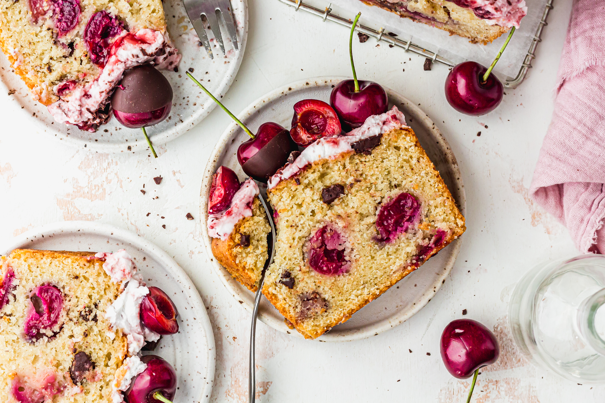
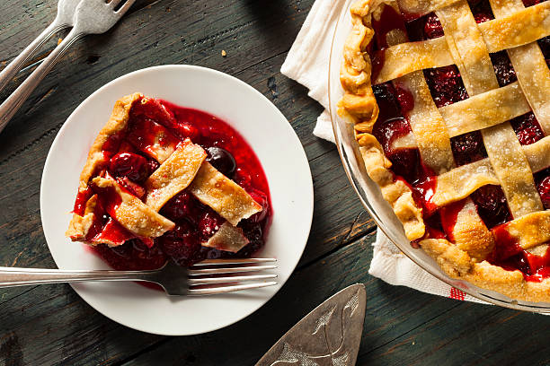

Ready to bake?
Discover delicious cherry-inspired cakes, pies, and more! Our recipes use fresh, juicy cherries to bring you delightful flavors in every bite. A website dedicated to sharing my passion for baking. Growing up, the kitchen was always a gathering place for my family, where we shared laughter, love, and, of course, delicious food. The name “Cherry” is actually my family name, and it’s something I carry with pride in every recipe I create. From decadent cakes to heartwarming pies, my recipes are a way of honoring my family’s love for baking and sharing that joy with others. I hope these recipes bring as much happiness to your table as they have to mine.
Featured Recipes
Cherry Cake
This cherry cake is moist, fluffy, and packed with cherry flavor! Perfect for any celebration.
- 2 cups flour
- 1 cup sugar
- 1 cup cherries, pitted and chopped
- 1/2 cup butter
- 3 eggs
- 1 tsp vanilla extract
- 1.Preheat the oven to 160Fan/180*C and line a 9×5-inch loaf pan with parchment paper.
- 2. Chop the cherries in half and toss them in 1 tsp of flour. Leave to one side.
- 3. Into a large mixing bowl, add the yoghurt, milk, oil, sugar, lemon juice and vanilla essence. Whisk till smooth.
- 4. Sift in the flour, baking powder and bicarbonate of soda and add the almond flour and salt. Whisk to a thick batter.
- 5. Fold in the cherries and most of the chocolate and spoon into the tin. Smooth over the top and garnish with the remaining chopped chocolate.
- 6. Bake for 44-46 minutes, until an inserted skewer comes out mostly clean. Cover the loaf with foil after 30 minutes, if it is browning too much. Allow to cool for 10 minutes then lift out the tin to cool fully on a wire rack.
- 7. Melt the 30g of chocolate and then dip in the cherries, one by one. Allow the excess to drip off and place on a parchment lined plate. Allow to set for a few minutes (transfer to the fridge if needed).
- 8. Stir together the yoghurt and cherry jam and spread over the cooled cherry loaf. Decorate with the chocolate covered cherries and extra chocolate.
- 9. Enjoy straight away or keep in a sealed container in the fridge for 3-5 days. You can freeze the un-frosted loaf for up to 1 month. Allow to thaw and decorate as above.
Cherry Pie
A classic cherry pie with a flaky crust and sweet filling. Enjoy a slice of this comforting dessert.
- 2 cups cherries, pitted
- 1/2 cup sugar
- 2 tbsp cornstarch
- 1 pie crust
- 1 tbsp butter
- 1. Roll out half of the pie dough to fit a 9-inch pie dish (keep the remaining dough chilled). To prevent sticking, sprinkle flour on your work surface and rolling pin. Roll from the center outwards for even thickness, lifting and rotating the dough by a quarter turn as you go. Check the size by inverting the pie dish over the dough (it should be about 2 inches larger).
- 2. Carefully place the dough into the pie dish without stretching it, and trim the edges to within 1 inch of the dish. Refrigerate while you prepare your filling.
- 3. Pit the cherries and cut them in half. Then, cut half of the mixture into quarters (the variation of sizes makes a better filling).
- 4. Add pitted cherries to a large bowl, then add the sugar, cornstarch, vanilla extract, almond extract, lemon juice, and salt. Gently toss to combine. Set aside.
- 5. In a large bowl, combine the pitted cherries, sugar, cornstarch, vanilla, almond, lemon juice, and salt. Give it a gentle toss, then set aside on the counter while you roll the top crust.
- 6. Roll out the remaining dough to a 12-inch round on a lightly floured surface. If the dough sticks to the surface, add more flour.
- 7. Spoon cherry pie filling into the prepared pie crust, but leave most of the liquid pooled at the bottom of the bowl (it makes the pie soggy). Scatter the little squares of cold butter over the filling.
- 8. Carefully place the top round of dough over the filling. Use a knife or pair of kitchen scissors to trim dough to within 1 inch of the edge of the dish.
- 9. Fold the edges of the top crust underneath the edges of the bottom crust, pressing the edge to seal it to create a thicker, 1/4-inch border that rests on the lip of the pie dish. Crimp the edges as desired.
- 10. Whisk the egg yolk and cream to create an egg wash, then brush it over the crust. Sprinkle with extra sugar and refrigerate the pie for 10 minutes before baking.
- 11. Cut 3 to 4 slits through the top pie crust to let steam escape in the oven.
- 12. Before baking, position an oven rack in the lower third of the oven and place a baking sheet on it. This will catch any potential drips from the pie. Preheat the oven to 400°F (204°C).
- 13. Place the pie on the hot baking sheet and bake for 20 minutes. Then, reduce the oven temperature to 350°F (177°C) and continue baking for another 35 to 45 minutes. The pie is done when the crust is golden brown and the filling is bubbling enthusiastically.
- 14. If you notice the crust edges browning too quickly, cover them with aluminum foil and continue baking until the pie is fully cooked. Allow the pie to cool for 3 to 4 hours before cutting for the best results (this gives the filling time to thicken and set properly).
Recipe Media
Watch our cherry cake tutorial video.
Listen to our cherry recipe tips audio.
For more cherry recipe ideas, visit All Recipes.